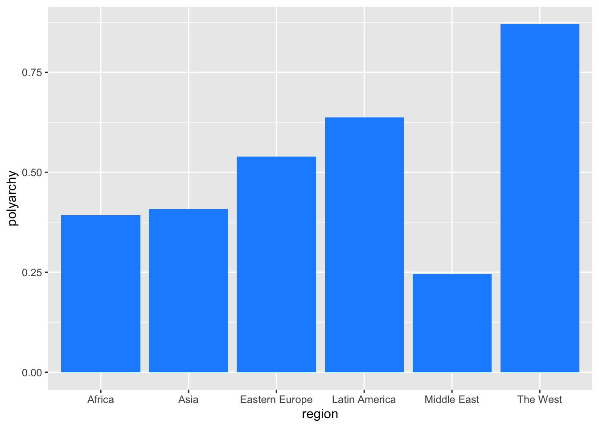

library(readr)
dem_summary <- read_csv("data/dem_summary.csv")Intro to the Tidyverse
A Data Science Workflow

The Tidyverse
- The Tidyverse is a collection of data science packages
- It is also considered a dialect of R
- In this class, we will be using many Tidyverse packages
readrfor reading data
tidyrfor data tidyingdplyrfor data manipulationggplot2for data visualization
- Click here for a full list
Working with Tidyverse packages
- At first we will load the packages independently, e.g.
library(ggplot2) - Later we will load them all at once with
library(tidyverse) - Another way to call a package is with
::, e.g.ggplot2::ggplot()
Reading Data into R
- Let’s use the
readrpackage to read in a dataset
Let’s Look at the Data
One way to do this is with the base R head() function
head(dem_summary)# A tibble: 6 × 5
region polyarchy gdp_pc flfp women_rep
<chr> <dbl> <dbl> <dbl> <dbl>
1 The West 0.871 37.9 53.0 28.1
2 Latin America 0.637 9.61 48.1 21.3
3 Eastern Europe 0.539 12.2 50.5 18.0
4 Asia 0.408 9.75 50.3 14.5
5 Africa 0.393 4.41 56.7 17.4
6 Middle East 0.246 21.1 26.6 10.2Use View()
Another way to look at the data is with View(). Or click on the name of the data frame in the Environment pane.
View(dem_summary)Using glimpse() from dplyr
Another way to look at the data is with glimpse() from the dplyr package.
library(dplyr)
glimpse(dem_summary)Rows: 6
Columns: 5
$ region <chr> "The West", "Latin America", "Eastern Europe", "Asia", "Afri…
$ polyarchy <dbl> 0.8709230, 0.6371358, 0.5387451, 0.4076602, 0.3934166, 0.245…
$ gdp_pc <dbl> 37.913054, 9.610284, 12.176554, 9.746391, 4.410484, 21.134319
$ flfp <dbl> 52.99082, 48.12645, 50.45894, 50.32171, 56.69530, 26.57872
$ women_rep <dbl> 28.12921, 21.32548, 17.99728, 14.45225, 17.44296, 10.21568Your Turn!
- Read in the
dem_summary.csvfile - Use the three methods we discussed to view the data
05:00
A Few More Basic dplyr Functions
Use select() to choose columns.
dem_summary_abbr <- dem_summary |>
select(polyarchy, gdp_pc)
glimpse(dem_summary_abbr)Rows: 6
Columns: 2
$ polyarchy <dbl> 0.8709230, 0.6371358, 0.5387451, 0.4076602, 0.3934166, 0.245…
$ gdp_pc <dbl> 37.913054, 9.610284, 12.176554, 9.746391, 4.410484, 21.134319A Few More Basic dplyr Functions
Use filter() to choose rows.
dem_summary_abbr <- dem_summary |>
filter(gdp_pc > 10)
glimpse(dem_summary_abbr)Rows: 3
Columns: 5
$ region <chr> "The West", "Eastern Europe", "Middle East"
$ polyarchy <dbl> 0.8709230, 0.5387451, 0.2458892
$ gdp_pc <dbl> 37.91305, 12.17655, 21.13432
$ flfp <dbl> 52.99082, 50.45894, 26.57872
$ women_rep <dbl> 28.12921, 17.99728, 10.21568
Note
Using the same name for the data frame results in overwriting the original data frame. If you want to keep the original data frame, use a different name.
A Few More Basic dplyr Functions
Use mutate() to create new columns.
dem_summary_abbr <- dem_summary |>
mutate(gdp_pc_thousands = gdp_pc * 1000)
glimpse(dem_summary_abbr)Rows: 6
Columns: 6
$ region <chr> "The West", "Latin America", "Eastern Europe", "Asia"…
$ polyarchy <dbl> 0.8709230, 0.6371358, 0.5387451, 0.4076602, 0.3934166…
$ gdp_pc <dbl> 37.913054, 9.610284, 12.176554, 9.746391, 4.410484, 2…
$ flfp <dbl> 52.99082, 48.12645, 50.45894, 50.32171, 56.69530, 26.…
$ women_rep <dbl> 28.12921, 21.32548, 17.99728, 14.45225, 17.44296, 10.…
$ gdp_pc_thousands <dbl> 37913.054, 9610.284, 12176.554, 9746.391, 4410.484, 2…Your Turn!
- Use your new
dplyrverbs to manipulate the data - Select columns, filter rows, and create new columns
05:00
Basic Data Viz with ggplot2
ggplot2is a powerful data visualization package- It is based on the grammar of graphics
- We will talk about this more in depth later
Basic Data Viz with ggplot2
- For now, let’s make a simple column chart
Code
library(ggplot2)
ggplot(data = dem_summary, aes(x = region, y = polyarchy)) +
geom_col(fill = "dodgerblue") 
Your Turn!
- Use
ggplot2to make a simple column chart - Choose a different variable to plot
- Change the color of the bars
05:00